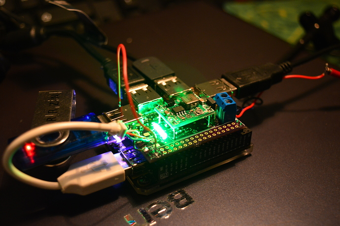
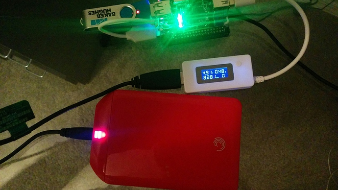

Welcome to GitHub Pages.
This github page is about the QUESO DIP for the C.H.I.P. (a $9 computer developed by NTC). The C.H.I.P. is a great board, a tiny linux computer that fits on your palm. It has one USB outlet and requires a pretty stable 5V supply that can deliver up to 1.1A. The QUESO attacks theses two drawbacks: It is a hyper active 4-port-USB-HUB. Instead of a passive hub (that sucks current from the CHIP) or an active hub (that has his own, second power supply) the Queso will be hyper-active(TM) and provide power TO the C.H.I.P.
Features
- Sits on top of your C.H.I.P. with the same footprint, but keeps all your C.H.I.P. pins untouched
- Has an optional on-board DCDC regulator that allows me to power the QUESO from 7-28V DC and provides stable 5V with up to 3A current to the QUESO and the C.H.I.P.. (e.g. run your C.H.I.P. on the 12V from your car)
Power is a big issue on the C.H.I.P. most likely the #1 problem on the forum. The reason is that C.H.I.P. draws quite a lot current from the powersuppply (I've measured 350mA at idle, and ~500mA under load with spikes up to 650mA). If your powersupply can't handle those spikes with stable 5V but instead reduce the voltage C.H.I.P. crashes. I've measured the stability on a few of my phone chargers, which claim to be 1A stable. The first provided 4.65V at 350mA, the next 4.7V@350mA and went down to 4.2V when I started a CPU intense task. That when I've decided to add my own DCDC regulator.

(Pictures shows the QUESO prototype) At the moment I feed it with an old laptop charger, 80W at 20V give me a lot of backup and the worst I've seen was 4.75V at 1.5A load.

QUESO feeding a USB harddisk witout own power supply :)
Support or Contact
Please post questions about the QUESO in the NTC forum at https://bbs.nextthing.co/t/queso-dip-a-hyper-active-usb-hub/3136